Exercise 1.3 Load Assets in Isaac Sim
Documentation - Link
Prepare asset packs for course
Unzip the asset packs prepared for this course and save it under Desktop.
cd ${HOME}
ls -lh Isaac_ROS_Isaac_SIM_\[DLIT61534\].zip
unzip Isaac_ROS_Isaac_SIM_\[DLIT61534\].zip -d ${HOME}/Desktop
export COURSE_DIR=/home/nvidia/Desktop/Isaac_ROS_Isaac_SIM_\[DLIT61534\]
Later in this document, we will refer this "Isaac_ROS_Isaac_SIM_[DLIT61534]" directory under Desktop as /home/nvidia/Desktop/Isaac_ROS_Isaac_SIM_[DLIT61534].
1.3a. Add Props/Assets
- Go to the Content tab in Isaac Sim
-
Go to
/home/nvidia/Desktop/Isaac_ROS_Isaac_SIM_[DLIT61534]/Isaac Sim Assets Pack 1/Assets/Isaac/2023.1.1/Isaac/Props/Asset Location Asset Class /home/nvidia/Desktop/Isaac_ROS_Isaac_SIM_[DLIT61534]/Isaac Sim Assets Pack 1/Assets/Isaac/2023.1.1/Isaac/Props/Warehouse Essentials: (Factory, Forklift, Pallet, Dolly...) /home/nvidia/Desktop/Isaac_ROS_Isaac_SIM_[DLIT61534]/Commercial 3D Models Pack/Assets/ArchVis/Commercial/Commercial Assets: (Chair, Table, Racks, Sofa...) /home/nvidia/Desktop/Isaac_ROS_Isaac_SIM_[DLIT61534]/Isaac Sim Assets Pack 3/Assets/Isaac/2023.1.1/NVIDIA/Assets/ArchVis/Residential/Residential Necessities: (Kitchen Items, Furniture, Food...) -
Drag and drop the assets into the scene
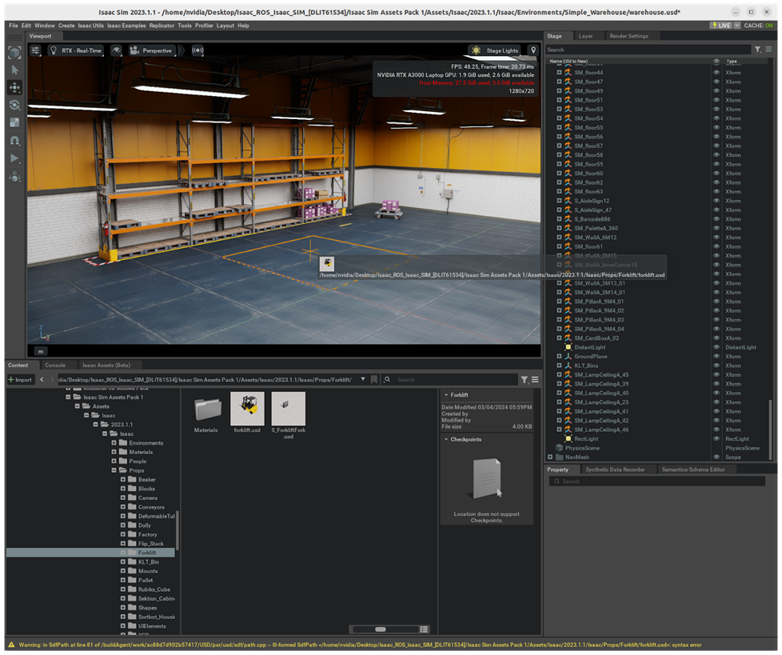
Tip
How to navigate in the Viewport
- Mouse Right-click and drag to tilt/pan
- Mouse Right-click and W A S D to move forward/left/back/right, Q E to move up/down
- Copy an object position by going to "Transform" tab
-
Select the assets, then in the Property tab, click the + Add button and choose Physics > Rigid Body with Colliders Preset
How to move the Asset
If you want to move the asset around, always select the asset from the stage and then use the arrows shown on the viewport to move the asset in X,Y or Z direction
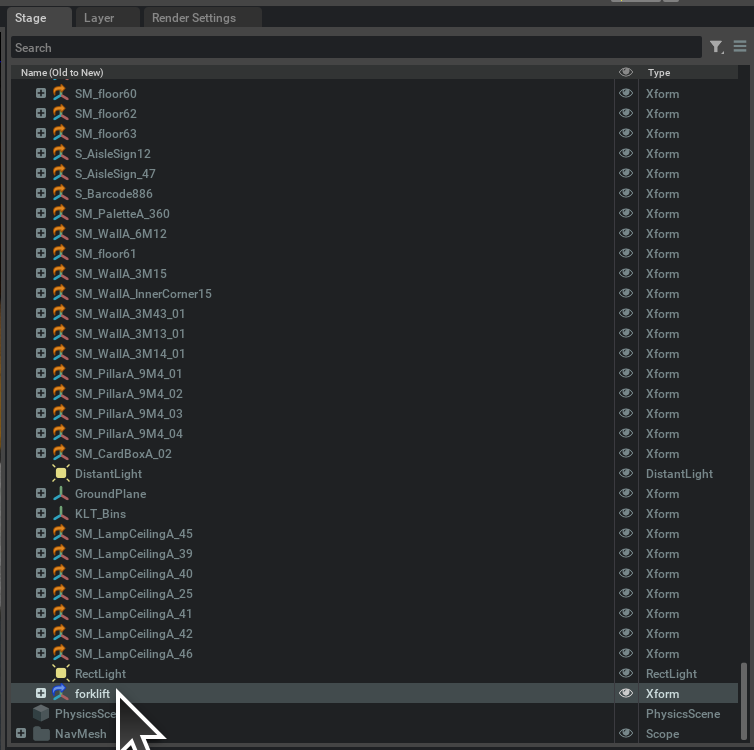
Info
If you plan to continue working on the later exercise using the environment you have been working on, save the environment file by selecting File > Save As... or Ctrl+Shift+S.
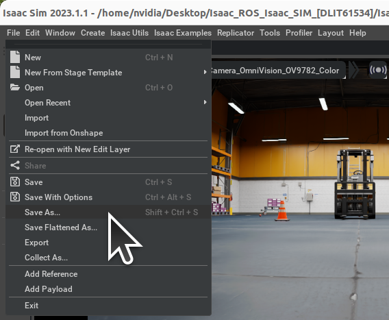
Cheat-file (course_env_1.usd)
You can access a pre-populated environment at /home/nvidia/Desktop/Isaac_ROS_Isaac_SIM_[DLIT61534]/Isaac Sim Assets Pack 1/Assets/Isaac/2023.1.1/Isaac/Environments/Simple_Warehouse/course_env_1.usd
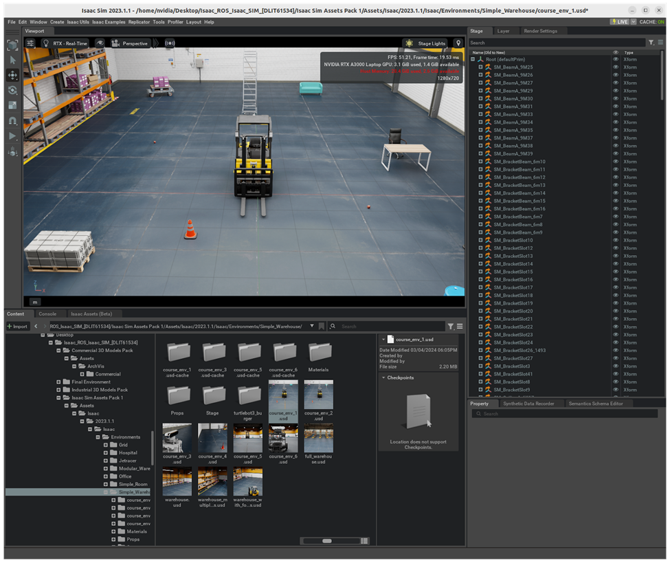
1.3b. Add People
Documentation - Link
Cheat-file (course_env_2.usd)
You can access a pre-populated environment at /home/nvidia/Desktop/Isaac_ROS_Isaac_SIM_[DLIT61534]/Isaac Sim Assets Pack 1/Assets/Isaac/2023.1.1/Isaac/Environments/Simple_Warehouse/course_env_2.usd
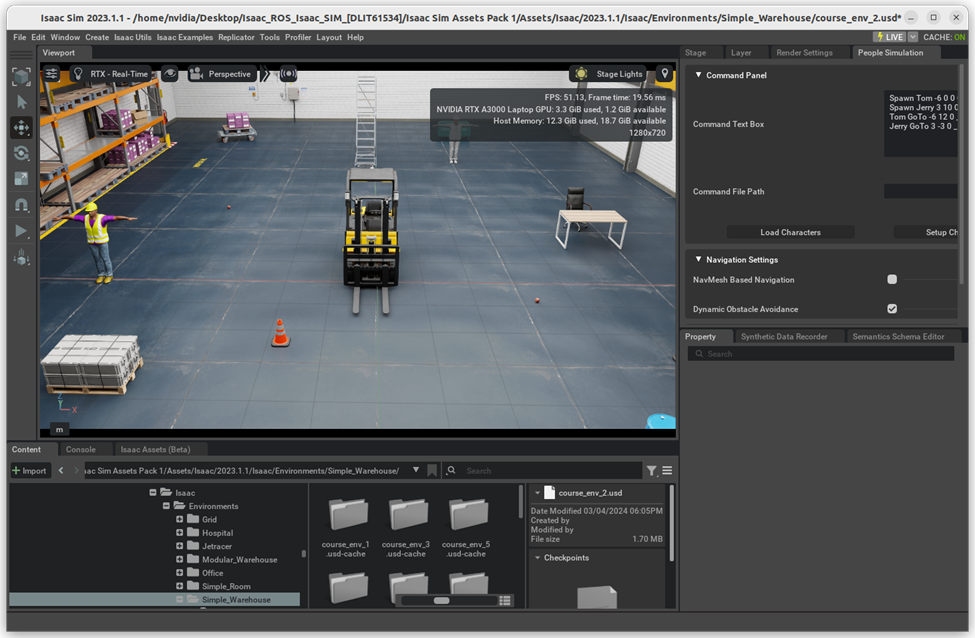
Note
When you open these cheat environment files, a pop up window may show up. Press "Yes".
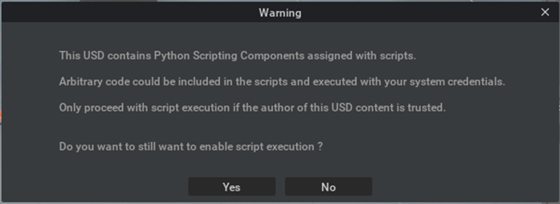
-
Load the environment needed for the simulation.
Make sure the parent prim /World exists, if not create the prim /World.Info
For the GTC lab, you can load the cheat-file below,
/home/nvidia/Desktop/Isaac_ROS_Isaac_SIM_[DLIT61534]/Isaac Sim Assets Pack 1/Assets/Isaac/2023.1.1/Isaac/Environments/Simple_Warehouse/course_env_2.usd. -
Open the extension manager via Window > Extensions. Search for "people" and enable the omni.anim.people extension.
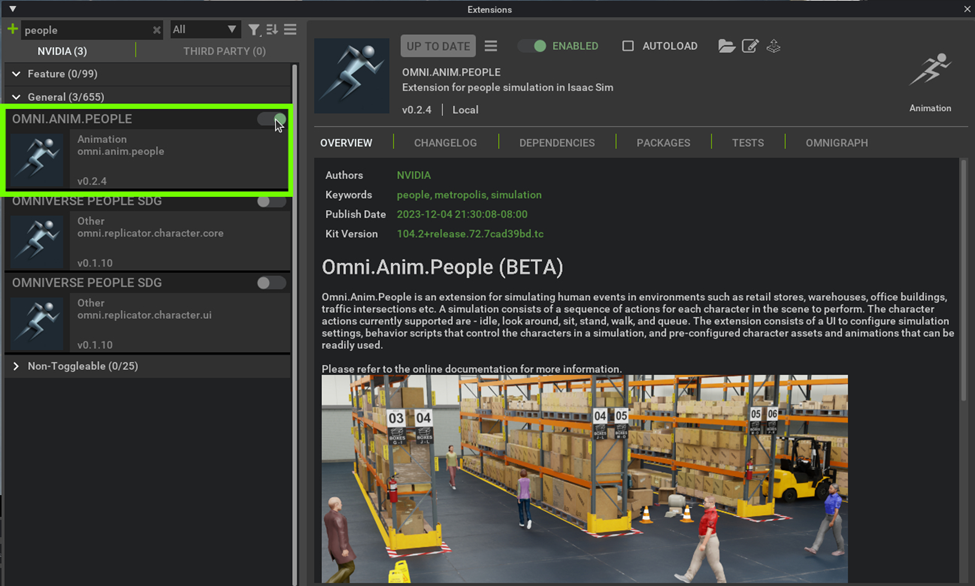
Tip
Check "AUTOLOAD" to enable this extension by default.
It will come handy when you need to restart Isaac Sim frequently. -
Load the People Simulation UI by navigating to Window > People Simulation.
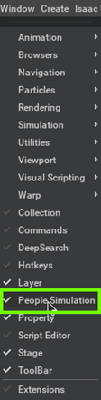
-
Copy this text in the Command Text Box. [Place the people in according to your environment]
Spawn Tom -6 0 0 0 Spawn Jerry 3 10 0 0 Tom GoTo -6 12 0 _ Jerry GoTo 3 -3 0 _ -
Click the Load Characters button to load the characters assets and animations
-
Next, click on the Setup Characters button to attach Behavior Scripts and Animation Graph to the characters.
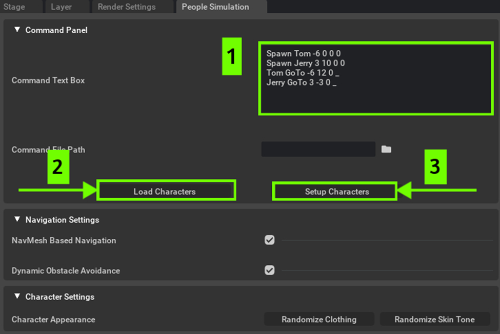
Note
If you get a login screen on a course supplied PC, then add the following credentials:
- Username :
admin - Password :
admin
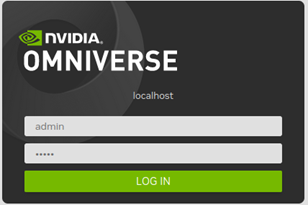
In case parent prim World does not exist
- In the Stage tab, Right-click the Root prim and choose "Clear Default Prim."
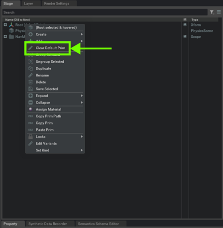
- In the Stage tab, Right-click and select Create > Xform.
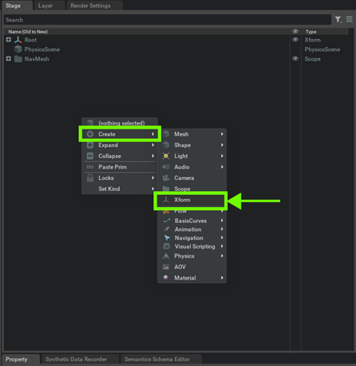
- In the Stage tab, rename Xform to World by double-clicking it and editing the name.
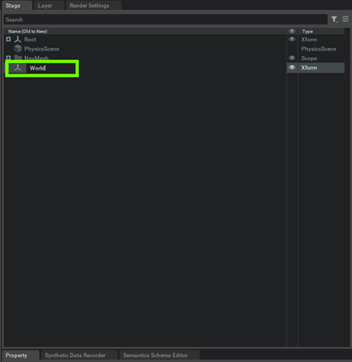
- In the Stage tab, rename Root prim to Warehouse by double-clicking it and editing the name.
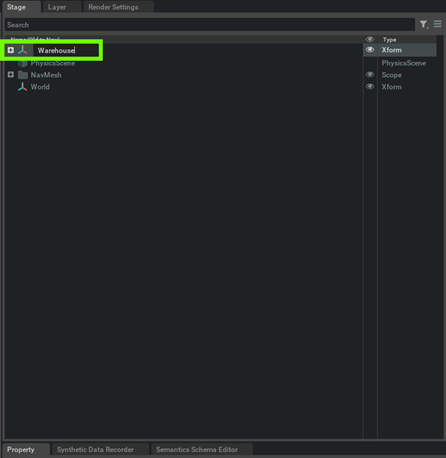
- Drag the Warehouse prim into the World prim.
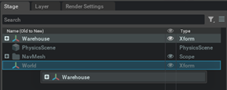
- Right-click the World prim and select "Set as Default Prim."
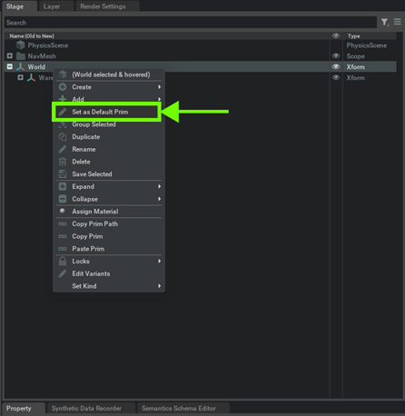
- Username :
-
Next, turn off the Navmesh Based Navigation setting and click Play to run the simulation.
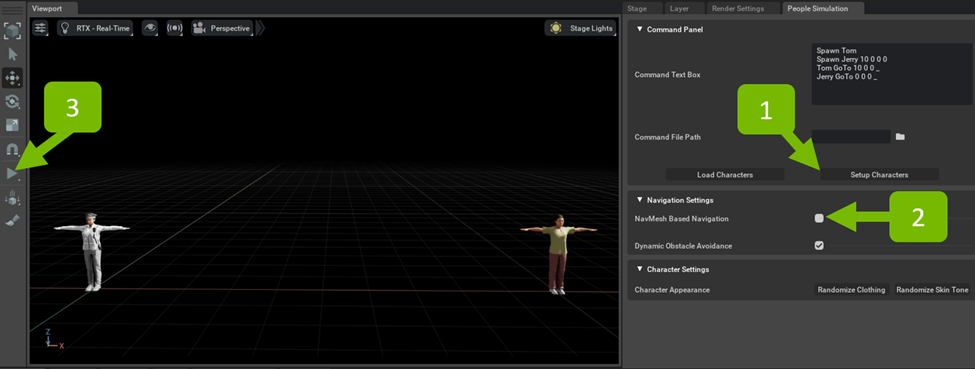
Note
To further customize the people simulation, explore this link.
Info
If you plan to continue working on the later exercise using the environment you have been working on, save the environment file by selecting File > Save As... or Ctrl+Shift+S.
1.3c. Add a Robot
Info
On the course supplied PC, we've already cloned the Turtlebot description package using the following command:
cd /home/nvidia/Desktop/Isaac_ROS_Isaac_SIM_[DLIT61534]
git clone -b humble-devel https://github.com/ROBOTIS-GIT/turtlebot3.git turtlebot3
-
Open the URDF importer Isaac Utils > Workflows > URDF Importer.
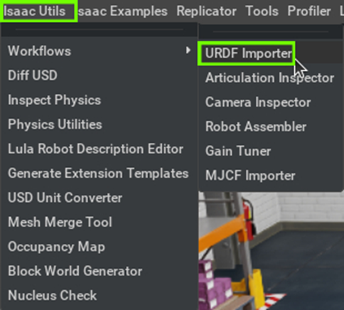
-
In the prompt window, under Import Options, make sure "Clear Stage" is deselected to keep the current environment, uncheck "Fix Base Link" for mobility, and switch "Joint Drive Type" to Velocity.
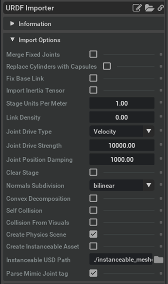
-
In the Import section, select the URDF file in the Input File and Output File.
-
Input File location of the URDF file for turtlebot:
/home/nvidia/Desktop/Isaac_ROS_Isaac_SIM_[DLIT61534]/turtlebot3/turtlebot3_description/urdf/turtlebot3_burger.urdf -
Output File location:
`/home/nvidia/Desktop/Isaac_ROS_Isaac_SIM_[DLIT61534]/Isaac Sim Assets Pack 1/Assets/Isaac/2023.1.1/Isaac/Environments/
-
-
Ensure nothing is selected on the stage by clicking an empty space in the Stage tab or selecting /World in the tree.
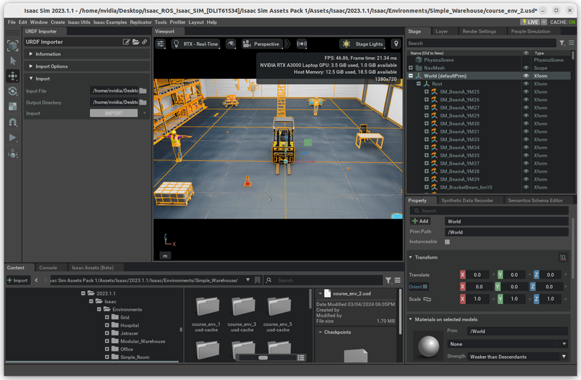
-
Click Import to proceed and place the robot according to your environment.
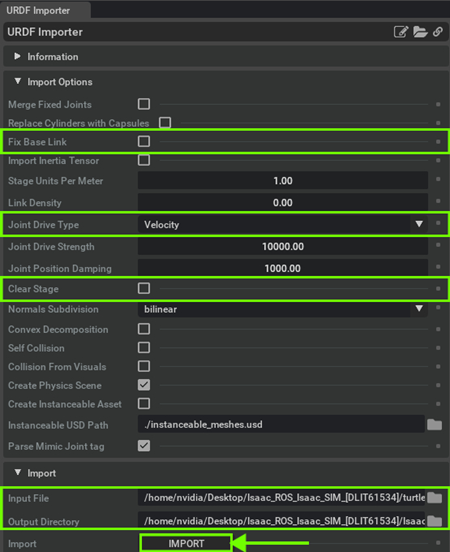
Note
You may encounter this confirmation dialog, if you already have the
turtlebot3_burger.usdin the output folder mentioned above.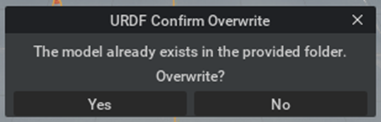
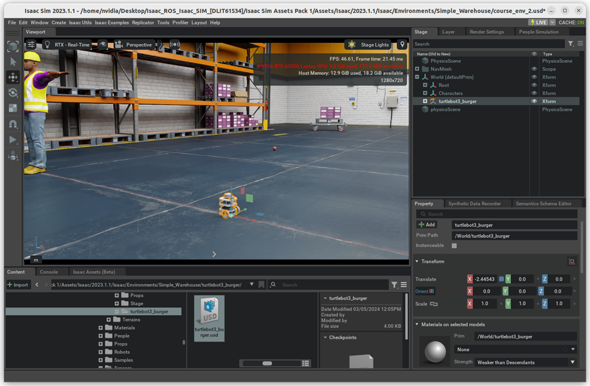
1.3d. Attach a camera to the robot
Cheat-file (course_env_3.usd)
You can access a pre-populated environment at /home/nvidia/Desktop/Isaac_ROS_Isaac_SIM_[DLIT61534]/Isaac Sim Assets Pack 1/Assets/Isaac/2023.1.1/Isaac/Environments/Simple_Warehouse/course_env_3.usd
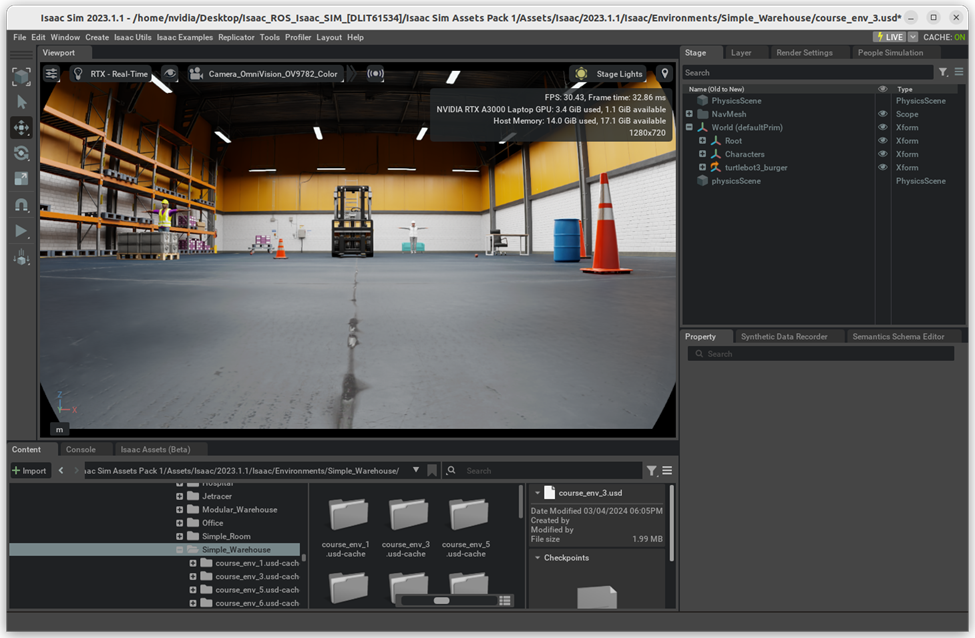
-
Go to
/home/nvidia/Desktop/Isaac_ROS_Isaac_SIM_[DLIT61534]/Isaac Sim Assets Pack 1/Assets/Isaac/2023.1.1/Isaac/Sensors/Intel/RealSense/ -
Drag and drop the
rsd455.usdin the viewport.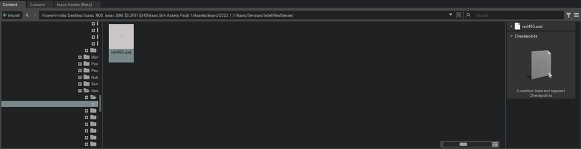
-
Drag the rsd455 prim into the
/World/turtlebot3_burger/base_scanprim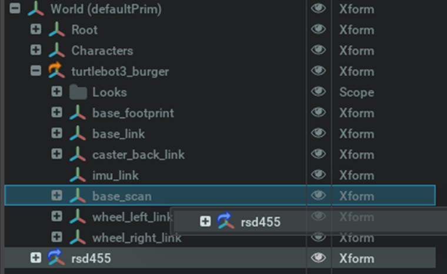
-
Adjust the camera placement according to the robot's position.
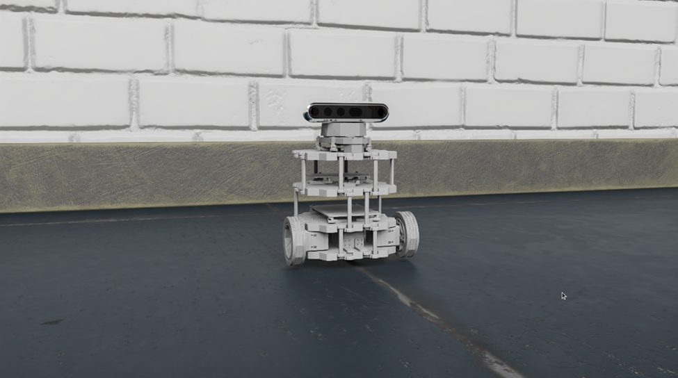
Tip
Moving an object to a certain location:
- Copy an object position by going to "Transform" tab
-
Change the Viewport camera to Realsense by selecting the Camera icon on the viewport, then navigating to Camera -> Camera_OmniVision_OV9782_Color.
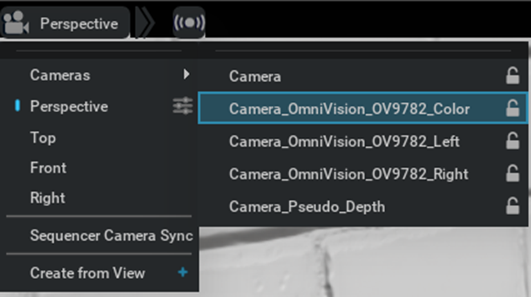
Info
If you plan to continue working on the later exercise using the environment you have been working on, save the environment file by selecting File > Save As... or Ctrl+Shift+S.